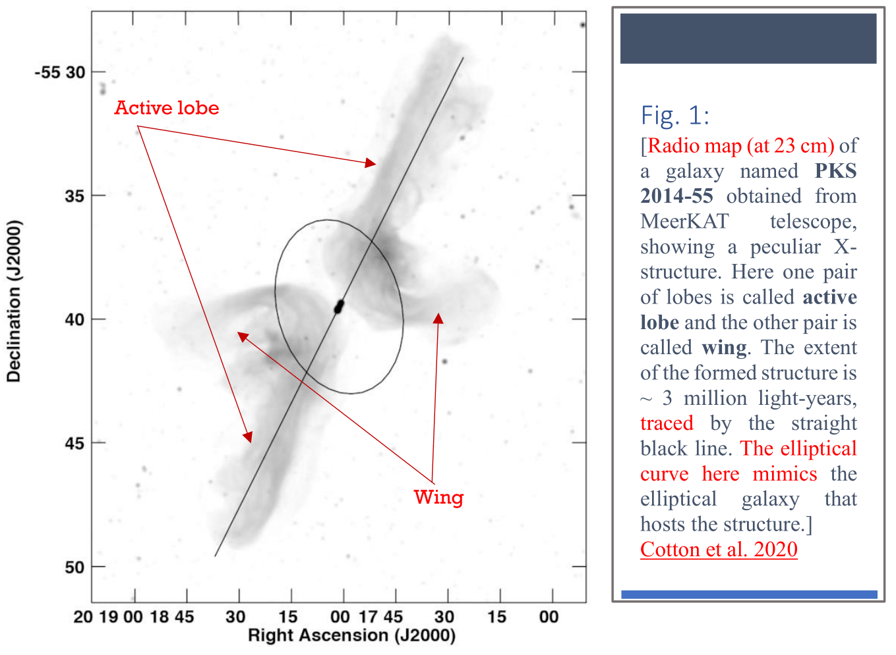
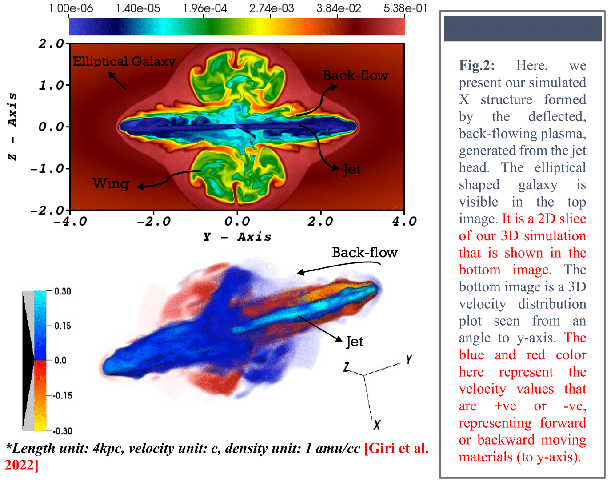

Bending of Cosmic fountains, giving birth to a peculiar X-shaped galaxy
When observed with a radio telescope, a giant peculiar X-shaped morphology is seen in some galaxies. It is difficult to understand what gives rise to such peculiar morphology; And, to date, this is a topic of debate among astronomers themselves.
Some of the supermassive black holes (SMBHs) that are billion times more massive than the sun reside at the centre of giant galaxies become active. During this active phase, the SMBH begins to rapidly accrete matter (hot ionized gas/plasma), some of which is violently thrown away along the SMBH’s spin axis by a complex process triggered by a strong magnetic disturbance. Hence, these active SMBHs usually throw jets of hot material out to large distances (out to a few billion light-years) with a velocity nearly the speed of light. These ejected jets resemble a structure that can very well be labelled as cosmic fountains. These jets typically consist of relativistic magnetised hot plasma (as the plasma is thrown, it also takes some of the magnetic field with it), which produce an outburst of radio emission via the synchrotron process. What’s surprising is that jet ejecta, which is expected to follow a particular path (a straight line; determined by the spin axis of the SMBH), sometimes bend from it and form a peculiar morphology that looks like the English letter ‘X’. So, when someone observes these galaxies with a radio telescope, they will find a giant X-like structure floating in the vast cosmos. It is difficult to understand what gives rise to such peculiar morphology; And, to date, this is a topic of debate among astronomers themselves.

In a recent study led by our team of astrophysicists including Indian and Italian scientists, have addressed this issue by re-investigating the formation mechanism of such structures computationally. We identified a possible origin hidden within the host galaxy shape itself. This is quite similar to the Bengali saying, The ghost is already hiding in plain sight. Using computer simulations performed using the Max Planck supercomputing cluster in Germany, we demonstrated the complex relationship between the X-morphology formation and the shape of the host elliptical galaxy, which plays a key role in deflecting the material hurled out by the supermassive black hole. To be specific, the already existing interstellar gas distribution of the galaxy itself is found responsible for deflecting the ejected hot plasma by the black hole sideways, giving the cosmic fountain (the ejected jet) an X-shape. In scientific terms, we demonstrated that as the jet propagates through the denser interstellar gas distribution of the galaxy, the jet head becomes unstable. As a result, it creates lots of back-flowing plasma material that traverse back again towards the centre of the galaxy. While doing so, the host galaxy specifies a path for its motion by providing a path with a maximum pressure gradient (the pressure gradient generates a force), which lies along the minor axis of the galaxy (i.e., along the shorter dimension of an ellipse). This generated force causes a deflection in the back-flowing plasma, creating the wing structure. Observational studies often find such alignments of these back-flowing materials along the minor axis of the host galaxy, which further supports our findings.

Our novel simulation has also shed light on a decade-old problem of these radio galaxies, which led our work towards a publication in a very prestigious European journal named Astronomy & Astrophysics by ESO (European Southern Observatory). The problem is noted below: Based on the properties of wing structure (which is less intense and rather diffuse than the active lobe), it was believed that the wing is a passively evolving feature (i.e., simply evolves under normal adiabatic expansion) compared to the active lobe, where the jet is currently in an active stage (by continuously filling itself with fresh and young plasma material from the SMBH). A similar characteristic has also been observed in our simulation showing the active lobe possessing freshly injected particles from the active galactic core, whereas the wing accumulates the older particles that back-flow from the jet head. Based on this, it can be stated that the active lobe should possess spectral index values flatter than the wing (flatter spectra mean younger particles; characteristics of synchrotron radiation). However, in observational studies, no systematic difference in the radio emission (hence in the spectral index) has been found in the four different arms of the X-shape. This further highlights that from a theoretical standpoint, there is a clear lag in the understanding of these galaxies’ emission processes, seriously contradicting the existing formation models. It has also led scientists to address these objects as peculiar sources.
This work led by Gourab Giri and the team has offered a resolution to this issue with a critical analysis of these radio galaxies. They highlight that shock acceleration processes of ultra-fast electrons (travelling nearly at the speed of light!) cause such peculiar emission characteristics. A shock wave is a wave that is generated by a moving object when its speed of movement exceeds the speed of sound in that medium. In our work, we explicitly showed the origin of these shock waves in the four arms of X-shaped structure and hence their influence on the radio emission of such peculiar morphologies. The conclusion which came out from our work is that the shock acceleration significantly re-energizes the plasma by speeding them up (hence altering their spectra), keeping the particles alive which instead would have lost all their energy under several dominant cooling processes (radiative and adiabatic cooling). Most importantly, the wing, which was thought of as a passively growing structure of X-shaped galaxies, is actually very active as it produces shock acceleration sites in it. The shocks are generated due to the diverted back-flowing material, as also shown by the black arrow in Fig. 2, making the wing actively evolving. This can single-handedly explain the peculiar emission characteristics observed in X-shaped radio galaxies including the signature where no systematic difference in the emission of lobe and wing is found. Our work has already been appreciated by a greater scientific community. Additionally, the prestigious journal Astronomy & Astrophysics has also decided to feature our work on the cover page of their upcoming volume. This work is already available on the arXiv preprint server, handled by Cornell University, the USA for open-source science.
Original paper: Modelling X-shaped Radio Galaxies: Dynamical and Emission Signatures from the Back-flow model
First Author: Gourab Giri
Co-authors: Bhargav Vaidya, Paola Rossi, Gianluigi Bodo, Dipanjan Mukherjee, Andrea Mignone
First author’s Institution: Indian Institute of Technology (IIT), Indore
Related articles
- A comparison of the properties of Narrow Line and the Broad Line Seyfert galaxies
- What makes radio-quiet AGN radio-quiet? A polarization perspective
- Star-forming S0 Galaxies in SDSS-MaNGA: fading spirals or rejuvenated S0s?
- Why are some jets curved: presence of dancing blackholes?
- Bar Buckling and Boxy/Peanut Bulges as the Tracer of Dark Matter Halo Shape